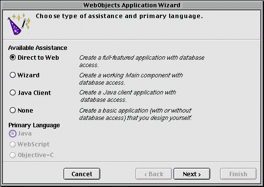
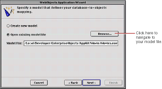
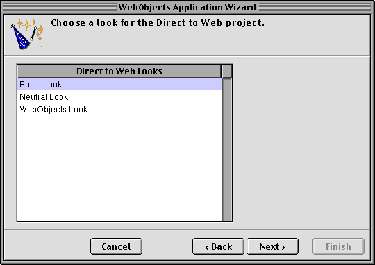
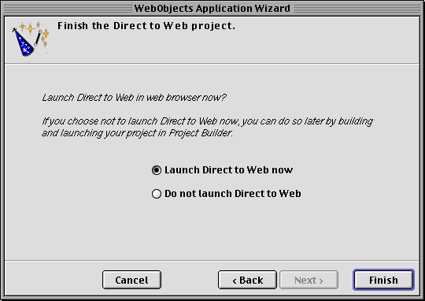

PATH
Documentation > WebObjects 4.5 >
Tools and Techniques
Creating a Direct to Web Project
To create a Direct to Web application, begin by using Project Builder to create a WebObjects application project. Follow these steps:
-
Launch Project Builder.
-
Choose Project
 New.
New.
-
In the New Project panel, choose the Webobjectsapplication project type from the pop-up list and specify the project path where you want to save the project.
Note:
On Windows NT, the project type and project path appear on different panels.
-
Click OK.
The first screen of the WebObjects application wizard appears.

-
Under Available Assistance, select Direct to Web.
You cannot select a language when the type of WebObjects application is Direct to Web;
when you create a Direct to Web project, Java is the only available language.
-
Click Next.

-
Choose "Open existing model file."
You can also create a new model file. If you choose "Create new model," you are led through a series of screens that prompt you to create a new model. For more information about creating a new model file, see the chapter "Using EOModeler" in Enterprise Objects Framework Developer's Guide
.
If the model you add to your project references entities in another model, you must add the other model to your project manually. The wizard doesn't include it automatically.
-
Click Browse, then navigate to the model file you want to use and select it.
If you are just exploring Direct to Web, you can use a model file from one the Enterprise Objects example projects, such as Movies.eomodel
in the Movies project. This model is used throughout this document.
-
Click Next.
The next screen offers a selection of user-interface styles ("looks") for your Direct to Web application; see
The Different Looks for WebObjects Applications
for more information. Click an item in the browser to select a look.

-
Click Next.
The next screen asks if you would like to launch your application immediately. If you choose not to have the wizard launch your application, see
Using Your Direct to Web Application
, which tells you how to launch your WebObjects application and describes what you see when you launch it.

-
Click Finish to complete the WebObjects application wizard procedure.
© 1999 Apple Computer, Inc. – (Last Updated July 27 99)